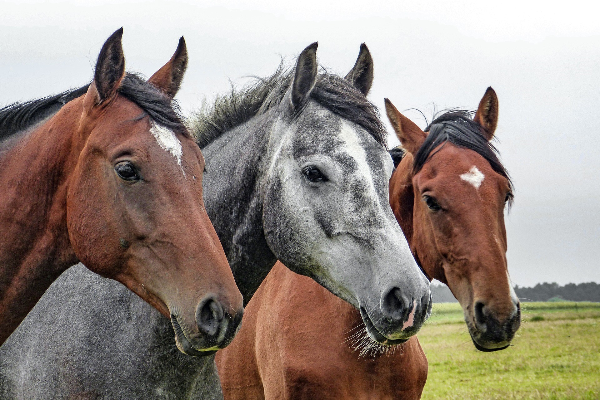

HORSE

Lifespan: 25–30 years. Speed: Normal gallop is about 40–48 km/h. Diet: Herbivores (grass, hay, and grains). Water: They drink about 38 to 45 liters of water every day.
Quick Anatomy Facts Sleep: They can sleep both standing up (using a lock-mechanism in their legs) and lying down. Vision: They have a 350-degree view because their eyes are on the sides of their head. They only have two blind spots: directly in front of them and directly behind them. Hooves: Their hooves are made of keratin, the same material as human fingernails.
Main Family Terms Foal: A baby horse. Mare: An adult female horse. Stallion: An adult male horse.